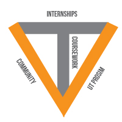

VT-Shaped Student: Background

The T-Shaped Student: The Vertical
- The Vertical aspect of the T-Shaped Student focuses on the cultivation of an individuals's departmental major.
- Great emphasis is placed on a student developing a series of strengths geared towards enhancing their understanding of their area of focus.
- Ex: I am very involved with all of my Literature and Language courses as well as several Enlgish electives that are not required.
The T-Shaped Student: The Horizontal
- The horizontal aspect of the T-Shaped Student primarily focuses on the stressing that students take a broad degree of general education classes that help broaden a student's education.
- Great emphasis is also placed on students having access to a wide discipline of research opportunities, internships, and educational opporunties outside of the classroom.
- Ex: I take several sociology courses to help further my education as an English major, and I participate in the extracurricular VT Triathlon club.
The T-Shaped Student: The Enhanced T
- Focus is placed on technology, and students learning how to work with cutting edge technology in order to both further their education and serve the community.
- Ex: I took an Intro to Computational Thinking class to better understand basic coding.
The V Shaped Student
- Focus is placed on taking knowledge outside of the classroom and into the world/community.
- Engaging with the world around us to both serve others and develop our education and personal strengths.
- Ex: I plan on developing an accessible online writing course that will be accessible to underserved areas of the world.
Sources
- Image of VT-Shaped Student from Apexcie (http://www.apexcie.vt.edu/ischolars)/
- Information of VT-Shaped Student from Powerpoint Slide by Provost Rikakis (Evolution of DAs AC 11.30.16.jpg)
- Information of VT-Shaped Student from Official Provost Introduction (http://undergraduate.provost.vt.edu/vt-shaped-student.html)
- Information of VT-Shaped Student from VT Beyond Boundaries (http://www.beyondboundaries.vt.edu/concepts.html)